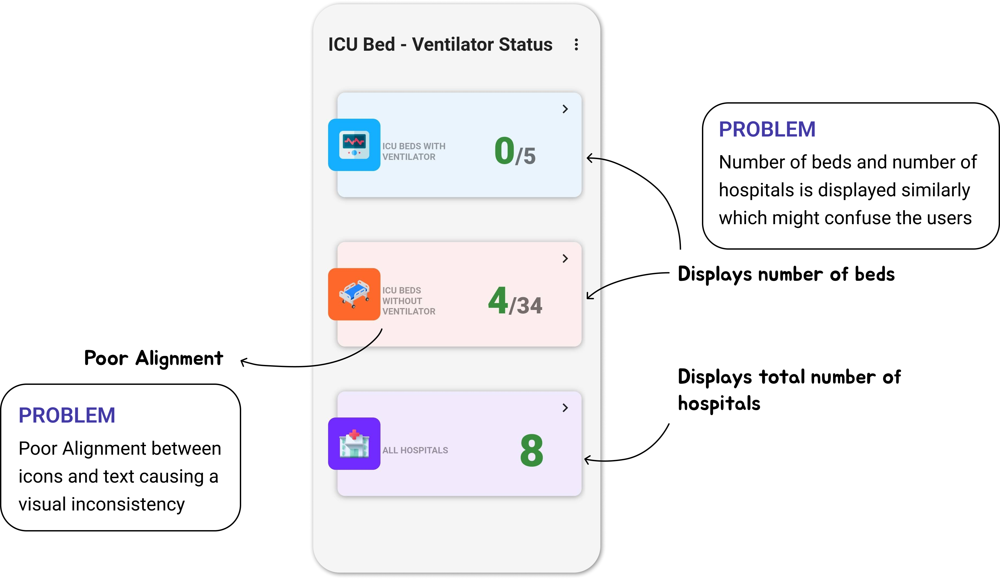
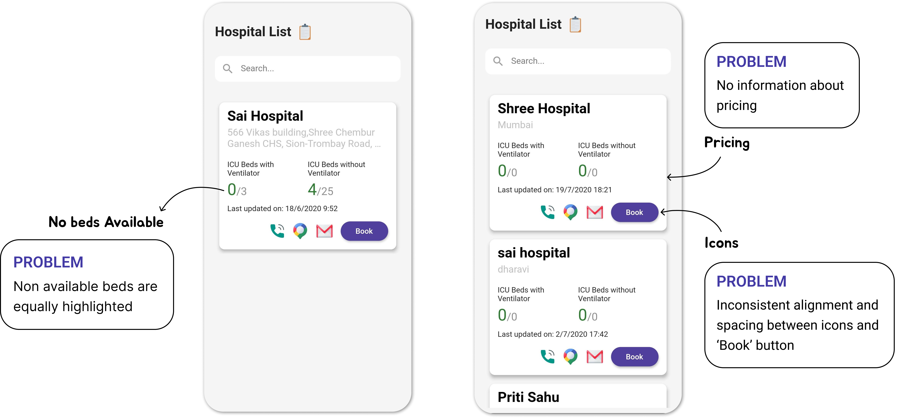

Project Overview
Research
Current App Design
At first, I closely examined the existing design, aiming to uncover any potential shortcomings.
Identifying Issues in Current Design
Analyzing the current setup allowed me to identify specific areas for improvement, setting the stage for a more user-centric approach.  Design


Going Forward
Next Steps
- Continuous User Feedback: Implement a feedback loop for ongoing user input, ensuring the app remains aligned with user needs.
- Accessibility Considerations: Prioritize accessibility features to ensure usability for users with diverse needs.
- Scalability Planning: Consider potential scalability issues as the user base grows, and plan for additional features and optimizations.